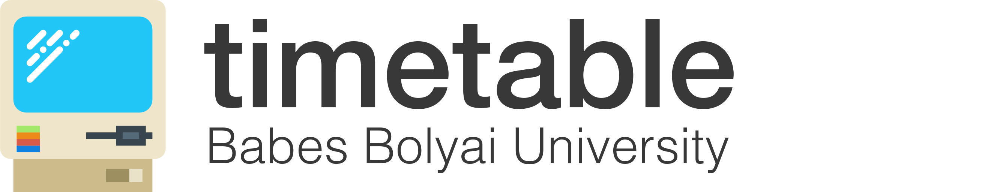

<mat-toolbar class="color-scheme" color="primary" style="height: 48px; box-shadow: 0px 0px 5px grey;">
  <span routerLink="/timetable" style="cursor: pointer;">
    
  </span>

  <!-- This fills the remaining space of the current row -->
  <button mat-icon-button style="margin-left: auto;" mat-button [matMenuTriggerFor]="menu" *ngIf="showMenu">
    
  </button>
  <mat-menu #menu="matMenu" id="menu">
    <div class="flex flex-col flex-vertical-center">
      <div>
       
      </div>
      <div>
       <p style="margin: 0.2rem; margin-top: 0.4rem; font-size: 20px;">{{displayName || 'N\A'}}</p>
      </div>
      <p style="margin: 0.2rem; margin-top: 0; font-size: 12px; color: gray">{{email || 'N\A'}}</p>
    </div>
    <button routerLink="/profile" style="width: 80%; margin: auto; margin-top: 0.4rem; border: 1px; border-radius: 5px;" mat-menu-item>Manage your Timetable Account</button>
    <hr style="width:80%;height:1px;border:none;color:lightgray;background-color:lightgray;">
    <button style="width: 80%; margin: auto; border: 1px; border-radius: 5px; text-align: center !important;" mat-menu-item (click)="openDialog()">Read our guidelines</button>
    <button routerLink="/timetable" style="width: 80%; margin: auto; border: 1px; border-radius: 5px; text-align: center !important;" mat-menu-item>Timetable</button>
    <button routerLink="/login" style="width: 80%; margin: auto; border: 1px; border-radius: 5px; text-align: center !important;" mat-menu-item (click)="signOut()">Sign out</button>
    <hr style="width:80%;height:1px;border:none;color:lightgray;background-color:lightgray;">
    <p style="margin: auto; padding-top: 0.2rem; padding-bottom: 0.2rem; text-align: center; font-size: 10px"> <a>Personal data</a> ; <a>Terms of services</a> </p>
  </mat-menu>
</mat-toolbar>
